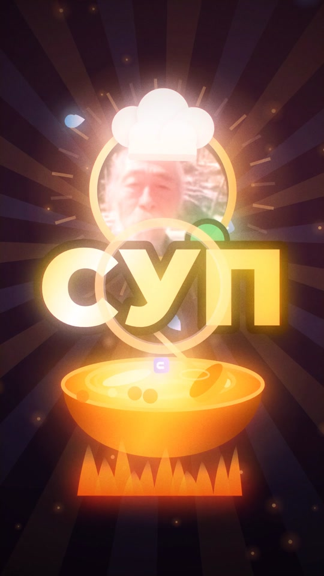
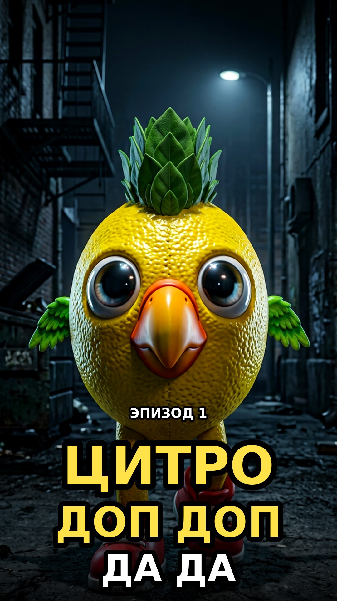
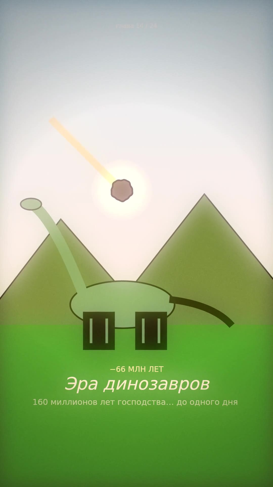

ПРОЦЕДУРНОЕ КИНО · СВЕЖЕЕ
ДЭД великий суп
Эдит по мему «О великий суп наварили»: гимн Ультрамаринов, который все слышат неправильно. ДЭД из sleep9919 варит суп — ревил, монтаж ударов, кастрюля. Картинка и музыка — код.
В превью видео играет без звука — включи звук кнопкой 🔊 в плеере.

SHORTS 4 ДЭД великий суп
ШОРТСЫ Все четыре ролика
КИНО Галерея фильмовВсё в этом репозитории рисуется и озвучивается процедурно. Локально: python3 film/serve.py.